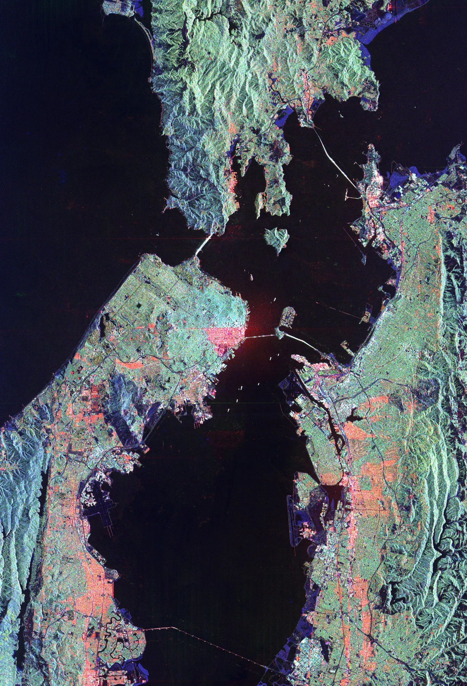
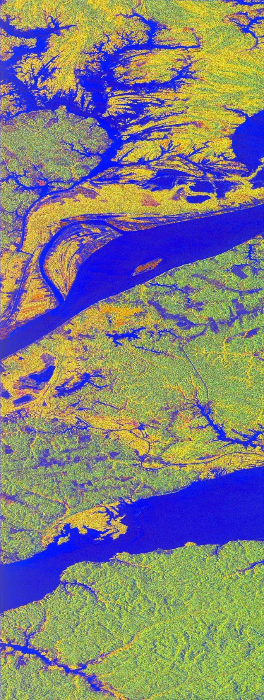
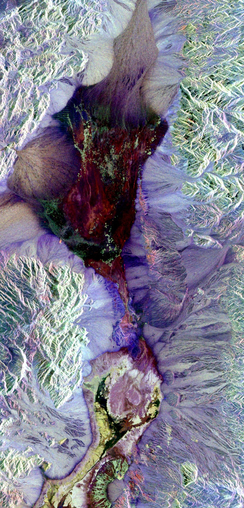

Chirp Scaling · 调频变标算法
在频域中通过相位补偿完成距离徙动校正与聚焦，适合围绕 FFT、复数乘法和外存调度组织规则的数据通路。
- 方位向 FFT：将回波变换到距离-多普勒域。
- Chirp Scaling 相位补偿：调整不同距离单元的徙动。
- 距离向 FFT、压缩与徙动补偿，再做距离向 IFFT。
- 方位压缩与残余相位补偿，方位向 IFFT 输出复图像。
当前参考平台：2048 × 2048 定点 CSA。成像参数、定点位宽与处理几何需要联合验证；不是任意任务参数的即插即用承诺。

FPGA SIGNAL PROCESSING SOLUTIONS
聚焦 SAR 成像与可靠计算，为科研团队连接算法、FPGA 板卡和验证工具。面向机载与星载实验评估，按任务定义适配方案。
PRODUCT CENTER / 产品中心
从研究平台出发，围绕任务选型。
板卡配置、算法授权与交付范围逐项确认。
面向科研与工程评估；上星或装机前的环境适应性、接口及可靠性验证需按任务要求另行确认。
SAR APPLICATIONS / SAR 应用
SAR 不只是点目标。真实地物影像呈现城市结构、河流湿地与山地纹理，帮助理解微波散射与二维聚焦。
SIR-C/X-SAR 于 1994 年 10 月 3 日获取的影像。平静水面较暗，城市与地形结构呈现不同雷达散射特征。
Image: NASA/JPL · PIA01791 · SIR-C/X-SAR

巴西马瑙斯地区的 L 波段极化合成影像。不同极化通道组合为伪彩色，展示河流、森林及淹水植被；不是自然光学颜色。
Image: NASA/JPL-Caltech · PIA01706 · SIR-C/X-SAR

L、C 波段通道合成的伪彩色雷达影像。粗糙山地、冲积扇与平滑盆地形成不同的后向散射纹理。
Image: NASA/JPL · PIA01349 · SIR-C/X-SAR
影像仅作 SAR 应用与原理示例，不代表本板卡处理结果、同源算法对比或性能指标；缩略图裁切展示，完整图像保留原幅面。
图片署名不代表 NASA、JPL 或 Caltech 对本产品背书。
Kintex-7 CSA 平台的 3 × 3 点目标成像。左侧查看目标分布，右侧放大中心点响应；用于检查聚焦形状与目标位置，不代表地物遥感影像。

单点目标的参考成像、峰值放大及距离/方位剖面。帮助理解二维脉冲响应，供板级结果核对峰位和形状；不是额外的硬件性能测试。

同一实验中的黄金输出、注入后输出与差值可视化。图像看起来接近时，差值仍可能存在；这只是一个个例，完整样本与判定规则见 SAR 数据手册。
以上三图均为仓库已有的合成点目标研究图，未修改图内数据或色标；CSA 图像不用于代表 BP 平台的成像效果。 查看图像版本与校验摘要 ↗
理解成像路径
以下是处理原理与已有研究实现的简介，不是两种算法在同一数据上的性能对比。
在频域中通过相位补偿完成距离徙动校正与聚焦，适合围绕 FFT、复数乘法和外存调度组织规则的数据通路。
当前参考平台：2048 × 2048 定点 CSA。成像参数、定点位宽与处理几何需要联合验证；不是任意任务参数的即插即用承诺。
对每个成像像素按平台轨迹计算斜距，从距离压缩后的回波中取样并补偿相位，再沿合成孔径相干累加。
适合需要显式处理像素几何的研究，但计算量与访存量需评估。当前 BP 平台另有无保护、三模冗余和运行时检查变体；这些是可靠性配置，不是不同成像分辨率。
算法依据（需仓库访问权限）： CSA reference ↗ · BP reference ↗
ENGINEERING / 技术与研发
定点建模、RTL 实现与板级数据通路协同设计，让仿真结果与硬件输出能够逐项比对。
SAR / CSA / BP / FFT结合 SEM 故障注入、冗余保护与错误分类，研究故障如何传播，而不只看一次正确输出。
SEM / TMR / ECC从主机控制、数据传输到结果检查，围绕真实实验流程组织工具，保留可追溯的验证记录。
PYTHON / UDP / UARTDOWNLOAD CENTER / 资料下载
在线阅读、离线保存或核对汇总统计。
每份手册说明实验范围与来源。
成像参考配置、SEU 注入统计与判定规则。
阅读 / 下载手册 ↗下载统计 JSON ↓Base-BP、TMR-BP 与 RA-BP 的实验汇总。
阅读 / 下载手册 ↗下载统计 JSON ↓架构与集成参考；尚未收录数值实验结果。
阅读 / 下载手册 ↗下载统计 JSON ↓04 / 合作方式
直接与开发者沟通。
先明确需求，再定义交付。
应用场景、信号规模、接口与实验目标。
评估平台配置、算法适配与验证范围。
书面确认报价、周期、文档与支持内容。
按双方约定的测试用例完成集成与验收。
05 / 开启下一次探索
告诉我你正在解决什么问题。
我们一起找到合适的硬件与算法路径。
按需报价，不设在线支付。
所有配置与交付承诺以双方确认为准。